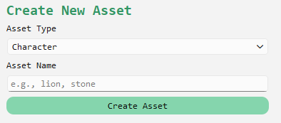
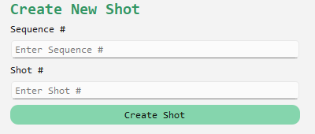
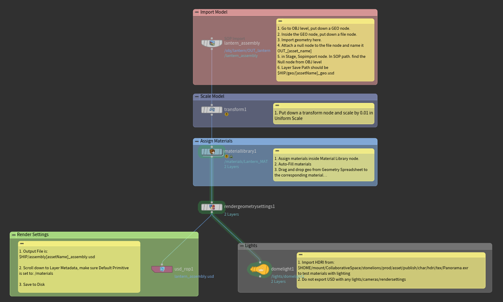
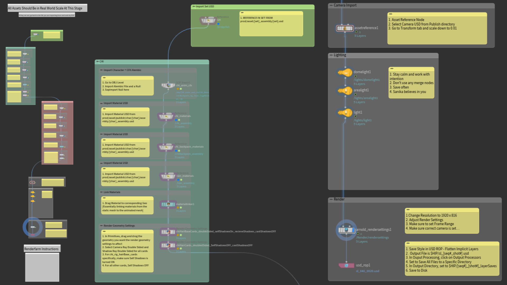

Making a film means a lot of files. For every asset in the film, there are probably over 50 files including all the version files for each part of the production. That means things can get messy really quickly. To manage this, I developed a pipeline tool, JADE, with Python and PyQT, to help with with the asset and file management of our film.
You can find my JADE Github Repository to see more details. This pipeline leverages a USD workflow to ensure a non-destructive approach to our film production.
Our file structure is split into a working folder and a publish folder where it is then separated by prop, character, and set. In the Actions section, the user can select Asset Type, Department, & Asset name. My automation tool, JADE, will then analyzes the files in the working folder for the asset, find the latest version, and make a version less copy to put in the publish folder.
For each shot, our file references will come from the publish folder. Which means every time an asset is updated, it will automatically update in each shot file.
This includes Playblasts from the Animation department which will be automatically updated in the Mastercut of our film, allowing for us to always have an up-to-date version of our entire film.
Because the version control is automated with JADE, we are much more likely to stay organized. Less time digging for files, less time repathing assets, more time spent on quality.
PRODUCTION AUTOMATION
In the Create section of JADE, folder structure creation is automated, so any new assets or shots being added can be seamlessly integrated into the pipeline. This is helpful especially to our
producer who can manage files and folders of each asset efficiently.


For a more detailed day by day blog on the development of the app, click on the following link! JADE AUTOMATION TOOL BLOG
ASSEMBLY FILE
Materials are assigned to static objects in the Assembly file. The materials USD is exported separately. In the Shot File, with a Material Linker node I can link the materials from the static mesh to the animated mesh.
This will be set up in the Template Shot File, so that the Materials of animated meshes will be automatically applied for every shot.

SHOT FILE
The Houdini shot file is set up so that the user can simply plug in the Animation, Set, & CFX files from the respective Publish folders and the file is ready for lighting! Detailed instructions on each section
in case any tweaks are needed on a shot by shot basis. All rendering is already set up within the Template Shot File.

RENDERING & OS
There was a lot of problem solving needed to be done to achieve the stylized look of the film. The handpainted look of our film comes from having a lot of opacity cards to break up the edges.
In the Render Geomtery Settings, we are able to turn on or off Cast Shadows, Recieve Shadows, and Self Shadows based on the geomtery. Navigating Arnold inside a non-native software was a challenge
but by the end of it, I am able confidently understand the renderer at a deeper, more technical level that will translate to other render engines. The layered approach to rendering ensures that we have the most control for any edits, during lighting and later for comp.
It was important that the pipeline and tools I built are accessible for both Linux and Windows users. The Environment Variables in the JADE script determine the user and
makes sure all pathing is relative to the operating system that is being used. Files don't break and remain clean since everything is relatively pathed!
Commandline rendering has been crucial to our success as we are able to check our USD files and renders before submitting to the Renderfarm making sure we are efficiently using
our resources.
CUSTOMER SATISFACTION
The best part of this entire process was hearing feedback from my team and learning that everything I worked on was indeed helping the team and making organization easier!
Ultimately, the collboration and communication between all my teammates is what is leading us to success!
TEAM!
Shoutout to the entire Stone Lions team! Everyone's individual pieces coming together is what makes this film truly special! Working with the best team ever serves as my motivation everyday!